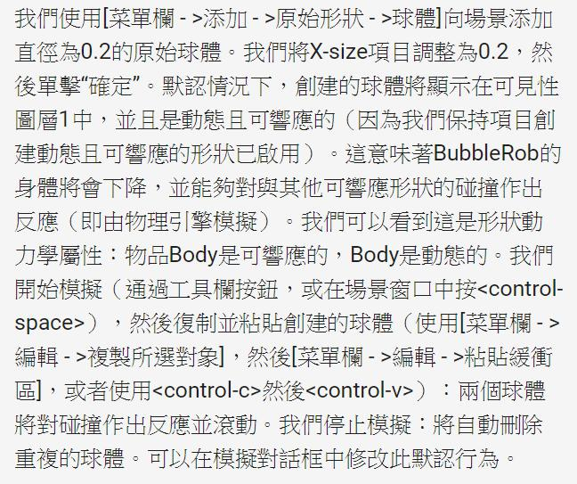

2019.03.29
40423207-6
40423160-6
這週在做BubbleRob tutorial
參考網址: http://www.coppeliarobotics.com/helpFiles/en/bubbleRobTutorial.htm
利用V-rep製作BubbleRob tutorial 使用感測器可以在圓柱圈內跑
接近圓柱時會後退 轉彎 再前進
完成影片
40423131-6
V-REP
在試做BubbleRob之前，先來認識一下軟體的介面與操作。
40623207-6
本週上課老師告知以後每週都要有自評跟互評，今天將實習任務二的 bubbleRob tutorial 看過，因為全都是英文所以花了蠻久的時間，做 V-rep 也重做了很多次才成功，之後會拍攝影片放到 youtube 上。
40623218-6
實習任務二是要我們做出可以閃避障礙物的程式模擬，完全都是原文所以花費了較多的時間去翻譯。
40623219-6
開始逕行實習任務2的bubbleRob的機器人模擬練習，要配合著老師提供的英文解說來操作，前面的摸了很久才做出來，而第一次做的最後面有遇到困難，機器人會一直撞柱子，在祭器人身上的鏡頭所顯示出來的畫面也沒有顯示出柱子，最後發現我的柱子有參數沒有開到所以會感測不到。
40623231-6
這星期在V-rep的模擬遇到最大的困難
http://www.coppeliarobotics.com/helpFiles/en/bubbleRobTutorial.htm
全都是英文，所以時間大都花在翻譯上面，翻譯
完才知道怎麼去模擬。

40623237-6
第六周則是在練習實習任務三(clean model toturail)，不過當時時間有點趕，所以我只按照toturail上面的步驟去製作它的外型而已，其他的則無實作，也就無拍攝製作過程，也跟上次一樣只有成品圖及影片。

40623241-6
心得：這週我把網站的架構用出來了，大家也陸陸續續開始推東西上來，透過群組的溝通維護網誌輕鬆多了，每個人再推之前都會先說一下，結束後也都會告知，才不會出現網誌亂掉的狀況，不需要做太多複雜的維護。
40623246-6
由於一開始沒甚麼事，跟製作網頁的一起整理一些資料後，對於繪圖的人也只能給一些簡單的意見。
2019.03.22 << Previous Next >> 2019.04.05